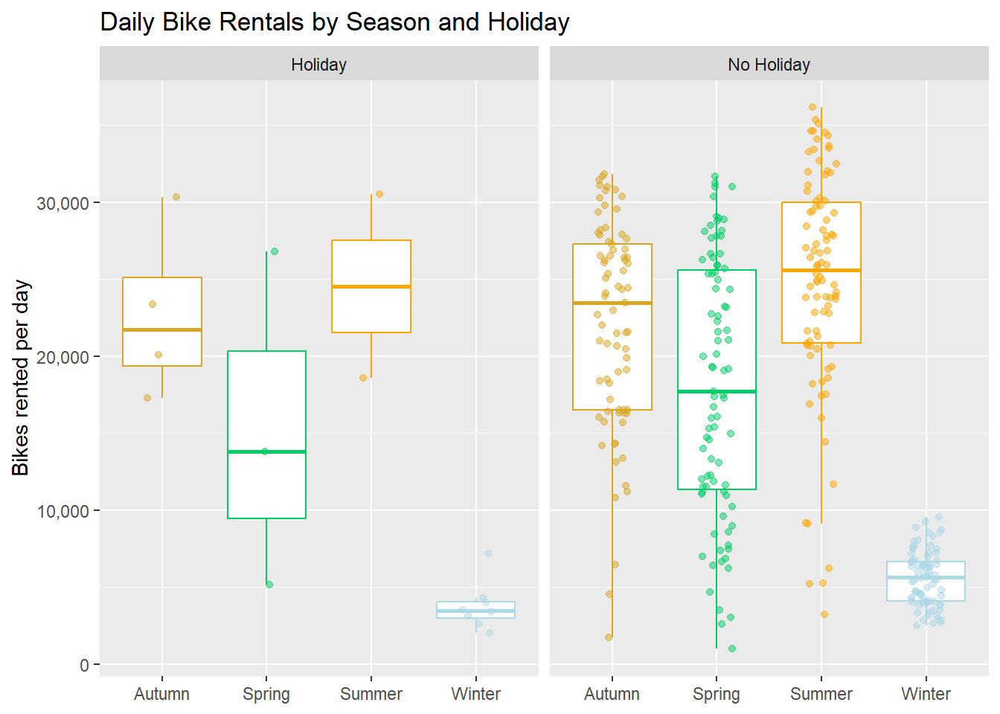
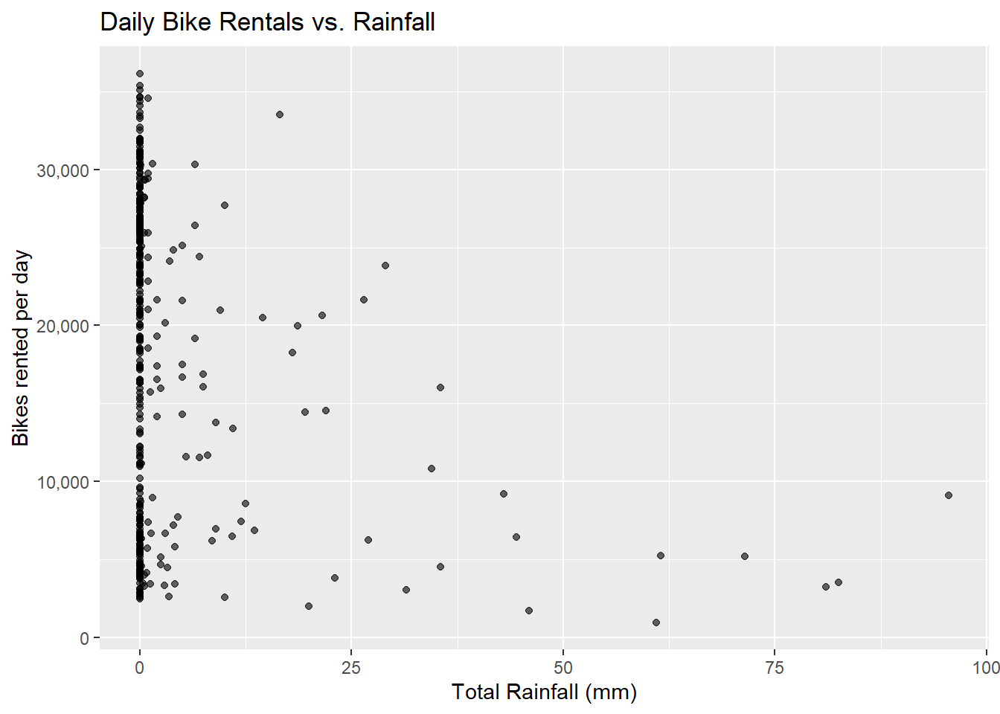
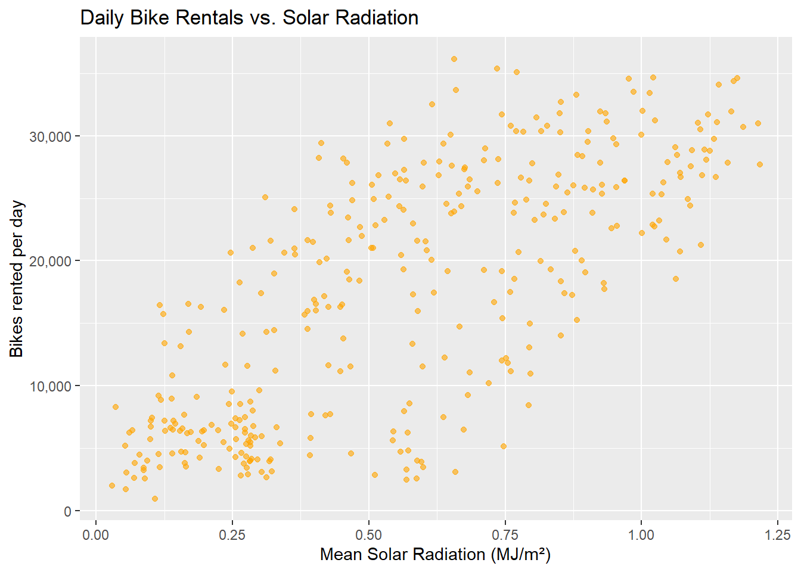
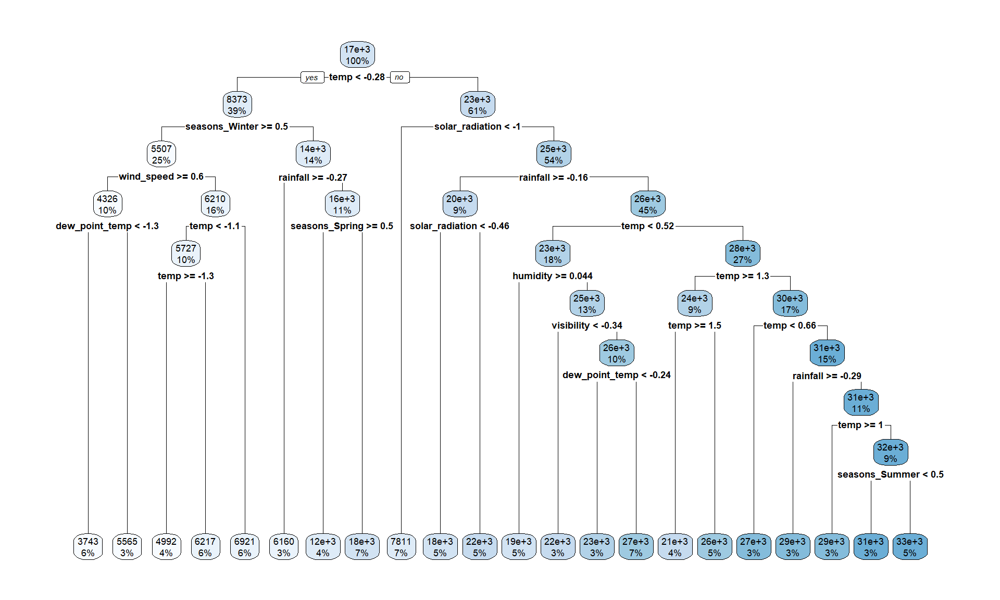
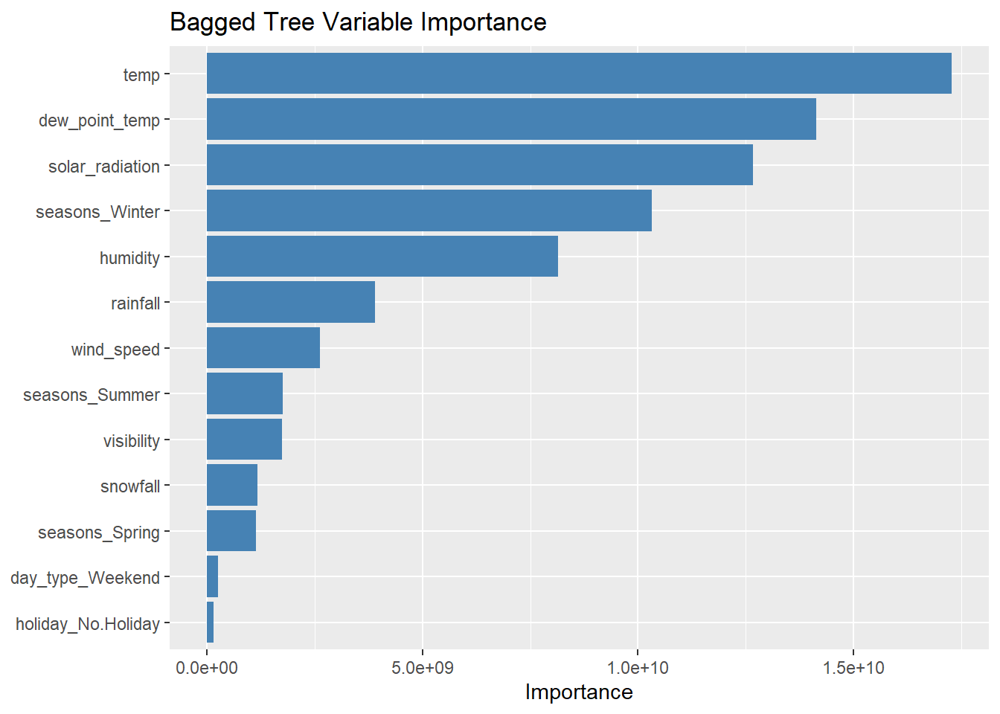
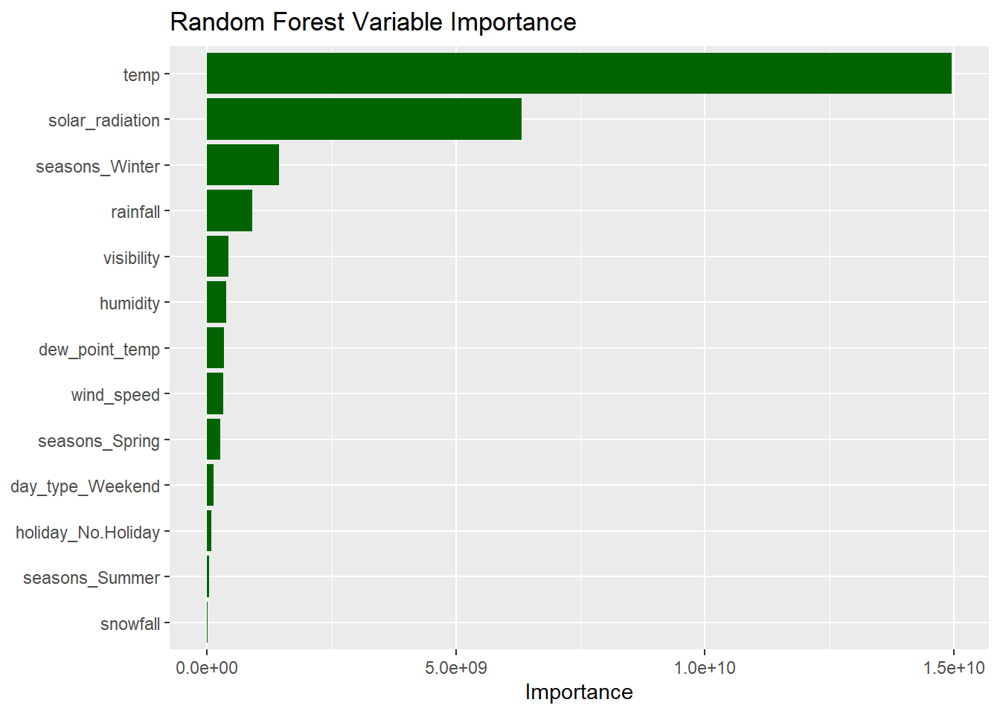

library(tidyverse)
library(lubridate)
library(janitor)
library(tidymodels)
library(baguette)
library(rpart.plot)ST558 HW 10 - Modeling Practice
Use data read-in and EDA logic from HW9.
reading the data
We read the data from a local copy of the CSV.
Run janitor::clean_names(). It converts every column to lower snake case and strips out the degree symbol.
bike_raw <- read_csv("SeoulBikeData.csv", locale = locale(encoding = "latin1")) |>
clean_names() |>
as_tibble()Rows: 8760 Columns: 14
── Column specification ────────────────────────────────────────────────────────
Delimiter: ","
chr (4): Date, Seasons, Holiday, Functioning Day
dbl (10): Rented Bike Count, Hour, Temperature(°C), Humidity(%), Wind speed ...
ℹ Use `spec()` to retrieve the full column specification for this data.
ℹ Specify the column types or set `show_col_types = FALSE` to quiet this message.bike_raw# A tibble: 8,760 × 14
date rented_bike_count hour temperature_c humidity_percent wind_speed_m_s
<chr> <dbl> <dbl> <dbl> <dbl> <dbl>
1 01/12/… 254 0 -5.2 37 2.2
2 01/12/… 204 1 -5.5 38 0.8
3 01/12/… 173 2 -6 39 1
4 01/12/… 107 3 -6.2 40 0.9
5 01/12/… 78 4 -6 36 2.3
6 01/12/… 100 5 -6.4 37 1.5
7 01/12/… 181 6 -6.6 35 1.3
8 01/12/… 460 7 -7.4 38 0.9
9 01/12/… 930 8 -7.6 37 1.1
10 01/12/… 490 9 -6.5 27 0.5
# ℹ 8,750 more rows
# ℹ 8 more variables: visibility_10m <dbl>, dew_point_temperature_c <dbl>,
# solar_radiation_mj_m2 <dbl>, rainfall_mm <dbl>, snowfall_cm <dbl>,
# seasons <chr>, holiday <chr>, functioning_day <chr>EDA
checking the data
1. missing data
First, check each column for missing values.
colSums(is.na(bike_raw)) date rented_bike_count hour
0 0 0
temperature_c humidity_percent wind_speed_m_s
0 0 0
visibility_10m dew_point_temperature_c solar_radiation_mj_m2
0 0 0
rainfall_mm snowfall_cm seasons
0 0 0
holiday functioning_day
0 0 No column has any missing values, so nothing needs to be fixed or imputed.
2. column types and values
Next, check that the column types make sense.
glimpse(bike_raw)Rows: 8,760
Columns: 14
$ date <chr> "01/12/2017", "01/12/2017", "01/12/2017", "01/…
$ rented_bike_count <dbl> 254, 204, 173, 107, 78, 100, 181, 460, 930, 49…
$ hour <dbl> 0, 1, 2, 3, 4, 5, 6, 7, 8, 9, 10, 11, 12, 13, …
$ temperature_c <dbl> -5.2, -5.5, -6.0, -6.2, -6.0, -6.4, -6.6, -7.4…
$ humidity_percent <dbl> 37, 38, 39, 40, 36, 37, 35, 38, 37, 27, 24, 21…
$ wind_speed_m_s <dbl> 2.2, 0.8, 1.0, 0.9, 2.3, 1.5, 1.3, 0.9, 1.1, 0…
$ visibility_10m <dbl> 2000, 2000, 2000, 2000, 2000, 2000, 2000, 2000…
$ dew_point_temperature_c <dbl> -17.6, -17.6, -17.7, -17.6, -18.6, -18.7, -19.…
$ solar_radiation_mj_m2 <dbl> 0.00, 0.00, 0.00, 0.00, 0.00, 0.00, 0.00, 0.00…
$ rainfall_mm <dbl> 0, 0, 0, 0, 0, 0, 0, 0, 0, 0, 0, 0, 0, 0, 0, 0…
$ snowfall_cm <dbl> 0, 0, 0, 0, 0, 0, 0, 0, 0, 0, 0, 0, 0, 0, 0, 0…
$ seasons <chr> "Winter", "Winter", "Winter", "Winter", "Winte…
$ holiday <chr> "No Holiday", "No Holiday", "No Holiday", "No …
$ functioning_day <chr> "Yes", "Yes", "Yes", "Yes", "Yes", "Yes", "Yes…date, seasons, holiday, and functioning_day were read in as characters. date needs to become a real date and the other three need to become factors. Everything else is numeric, as expected.
Basic summary statistics for the numeric columns:
bike_raw |>
select(where(is.numeric)) |>
summary() rented_bike_count hour temperature_c humidity_percent
Min. : 0.0 Min. : 0.00 Min. :-17.80 Min. : 0.00
1st Qu.: 191.0 1st Qu.: 5.75 1st Qu.: 3.50 1st Qu.:42.00
Median : 504.5 Median :11.50 Median : 13.70 Median :57.00
Mean : 704.6 Mean :11.50 Mean : 12.88 Mean :58.23
3rd Qu.:1065.2 3rd Qu.:17.25 3rd Qu.: 22.50 3rd Qu.:74.00
Max. :3556.0 Max. :23.00 Max. : 39.40 Max. :98.00
wind_speed_m_s visibility_10m dew_point_temperature_c solar_radiation_mj_m2
Min. :0.000 Min. : 27 Min. :-30.600 Min. :0.0000
1st Qu.:0.900 1st Qu.: 940 1st Qu.: -4.700 1st Qu.:0.0000
Median :1.500 Median :1698 Median : 5.100 Median :0.0100
Mean :1.725 Mean :1437 Mean : 4.074 Mean :0.5691
3rd Qu.:2.300 3rd Qu.:2000 3rd Qu.: 14.800 3rd Qu.:0.9300
Max. :7.400 Max. :2000 Max. : 27.200 Max. :3.5200
rainfall_mm snowfall_cm
Min. : 0.0000 Min. :0.00000
1st Qu.: 0.0000 1st Qu.:0.00000
Median : 0.0000 Median :0.00000
Mean : 0.1487 Mean :0.07507
3rd Qu.: 0.0000 3rd Qu.:0.00000
Max. :35.0000 Max. :8.80000 The ranges look valid. Humidity is between 0 and 98%, hours run from 0 to 23, and rainfall, snowfall, and bike counts are never negative. Bike count has a long right tail, which we look at below.
Unique values and counts for the categorical columns:
table(bike_raw$seasons, useNA = "ifany")
Autumn Spring Summer Winter
2184 2208 2208 2160 table(bike_raw$holiday, useNA = "ifany")
Holiday No Holiday
432 8328 table(bike_raw$functioning_day, useNA = "ifany")
No Yes
295 8465 The values are clean, with no typos or blanks. We also check whether holidays and non-functioning days overlap:
xtabs(~ holiday + functioning_day, data = bike_raw) functioning_day
holiday No Yes
Holiday 24 408
No Holiday 271 80573. convert the date
The dates are in day/month/year format, so we use dmy() from lubridate. We then confirm nothing failed to parse and check the date range.
bike_raw <- bike_raw |>
mutate(date = dmy(date))
sum(is.na(bike_raw$date))[1] 0range(bike_raw$date)[1] "2017-12-01" "2018-11-30"Every date parsed, and the data covers one year, from December 2017 through November 2018.
4. convert character variables to factors
bike_raw <- bike_raw |>
mutate(across(c(seasons, holiday, functioning_day), as.factor))
str(bike_raw |> select(seasons, holiday, functioning_day))tibble [8,760 × 3] (S3: tbl_df/tbl/data.frame)
$ seasons : Factor w/ 4 levels "Autumn","Spring",..: 4 4 4 4 4 4 4 4 4 4 ...
$ holiday : Factor w/ 2 levels "Holiday","No Holiday": 2 2 2 2 2 2 2 2 2 2 ...
$ functioning_day: Factor w/ 2 levels "No","Yes": 2 2 2 2 2 2 2 2 2 2 ...5. rename variables
clean_names() gave us snake case names, but some include units and are long (dew_point_temperature_c, solar_radiation_mj_m2). We shorten them for readability.
bike_data <- bike_raw |>
rename(
bike_count = rented_bike_count,
temp = temperature_c,
humidity = humidity_percent,
wind_speed = wind_speed_m_s,
visibility = visibility_10m,
dew_point_temp = dew_point_temperature_c,
solar_radiation = solar_radiation_mj_m2,
rainfall = rainfall_mm,
snowfall = snowfall_cm
)
names(bike_data) [1] "date" "bike_count" "hour" "temp"
[5] "humidity" "wind_speed" "visibility" "dew_point_temp"
[9] "solar_radiation" "rainfall" "snowfall" "seasons"
[13] "holiday" "functioning_day"6. summary stats
To avoid repeating the same summarize() code for each grouping, we write a helper that summarizes bike count by whatever grouping variables we pass it.
bike_summary <- function(data, ...) {
data |>
group_by(...) |>
summarize(
n = n(),
total = sum(bike_count),
mean = mean(bike_count),
sd = sd(bike_count),
min = min(bike_count),
median = median(bike_count),
max = max(bike_count),
.groups = "drop"
)
}Across seasons:
bike_data |> bike_summary(seasons)# A tibble: 4 × 8
seasons n total mean sd min median max
<fct> <int> <dbl> <dbl> <dbl> <dbl> <dbl> <dbl>
1 Autumn 2184 1790002 820. 651. 0 764. 3298
2 Spring 2208 1611909 730. 622. 0 583 3251
3 Summer 2208 2283234 1034. 690. 9 906. 3556
4 Winter 2160 487169 226. 150. 3 203 937Summer has the highest mean rentals, followed by autumn, spring, and winter.
Across holidays:
bike_data |> bike_summary(holiday)# A tibble: 2 × 8
holiday n total mean sd min median max
<fct> <int> <dbl> <dbl> <dbl> <dbl> <dbl> <dbl>
1 Holiday 432 215895 500. 571. 0 240 2400
2 No Holiday 8328 5956419 715. 647. 0 524. 3556More bikes are rented on non-holidays than on holidays.
Across functioning days:
bike_data |> bike_summary(functioning_day)# A tibble: 2 × 8
functioning_day n total mean sd min median max
<fct> <int> <dbl> <dbl> <dbl> <dbl> <dbl> <dbl>
1 No 295 0 0 0 0 0 0
2 Yes 8465 6172314 729. 642. 2 542 3556When functioning_day is No, the bike count is always 0. These rows tell us nothing about demand, so we drop them and keep only functioning hours.
bike_data <- bike_data |>
filter(functioning_day == "Yes") |>
select(-functioning_day)
nrow(bike_data)[1] 8465Before collapsing to daily data, we check whether the very high hourly counts look like data entry errors:
ggplot(bike_data, aes(x = seasons, y = bike_count, fill = seasons)) +
geom_boxplot(show.legend = FALSE) +
theme_minimal() +
labs(
title = "Hourly Bike Rentals by Season",
x = NULL,
y = "Bikes rented per hour"
)
The high counts look valid.
7. summarize across hours
We collapse the hourly data to one row per day. Bike count, rainfall, and snowfall are summed across the day, and the other weather variables are averaged.
bike_daily <- bike_data |>
group_by(date, seasons, holiday) |>
summarize(
across(c(bike_count, rainfall, snowfall), sum),
across(c(temp, humidity, wind_speed, visibility, dew_point_temp, solar_radiation), mean),
.groups = "drop"
)
bike_daily# A tibble: 353 × 12
date seasons holiday bike_count rainfall snowfall temp humidity
<date> <fct> <fct> <dbl> <dbl> <dbl> <dbl> <dbl>
1 2017-12-01 Winter No Holiday 9539 0 0 -2.45 45.9
2 2017-12-02 Winter No Holiday 8523 0 0 1.32 62.0
3 2017-12-03 Winter No Holiday 7222 4 0 4.88 81.5
4 2017-12-04 Winter No Holiday 8729 0.1 0 -0.304 52.5
5 2017-12-05 Winter No Holiday 8307 0 0 -4.46 36.4
6 2017-12-06 Winter No Holiday 6669 1.3 8.6 0.0458 70.8
7 2017-12-07 Winter No Holiday 8549 0 10.4 1.09 67.5
8 2017-12-08 Winter No Holiday 8032 0 0 -3.82 41.8
9 2017-12-09 Winter No Holiday 7233 0 0 -0.846 46
10 2017-12-10 Winter No Holiday 3453 4.1 32.5 1.19 69.7
# ℹ 343 more rows
# ℹ 4 more variables: wind_speed <dbl>, visibility <dbl>, dew_point_temp <dbl>,
# solar_radiation <dbl>The daily data has 353 days.
8. summaries and plots on the daily data
Recreate the summary statistics on the daily data.
bike_daily |>
select(where(is.numeric)) |>
summary() bike_count rainfall snowfall temp
Min. : 977 Min. : 0.000 Min. : 0.000 Min. :-14.738
1st Qu.: 6967 1st Qu.: 0.000 1st Qu.: 0.000 1st Qu.: 3.304
Median :18563 Median : 0.000 Median : 0.000 Median : 13.738
Mean :17485 Mean : 3.576 Mean : 1.863 Mean : 12.776
3rd Qu.:26285 3rd Qu.: 0.500 3rd Qu.: 0.000 3rd Qu.: 22.592
Max. :36149 Max. :95.500 Max. :78.700 Max. : 33.742
humidity wind_speed visibility dew_point_temp
Min. :22.25 Min. :0.6625 Min. : 214.3 Min. :-27.750
1st Qu.:47.58 1st Qu.:1.3042 1st Qu.:1087.0 1st Qu.: -5.188
Median :57.17 Median :1.6583 Median :1557.8 Median : 4.612
Mean :58.17 Mean :1.7261 Mean :1434.0 Mean : 3.954
3rd Qu.:67.71 3rd Qu.:1.9542 3rd Qu.:1874.3 3rd Qu.: 14.921
Max. :95.88 Max. :4.0000 Max. :2000.0 Max. : 25.038
solar_radiation
Min. :0.02917
1st Qu.:0.28333
Median :0.56500
Mean :0.56773
3rd Qu.:0.82000
Max. :1.21667 bike_daily |> bike_summary(seasons)# A tibble: 4 × 8
seasons n total mean sd min median max
<fct> <int> <dbl> <dbl> <dbl> <dbl> <dbl> <dbl>
1 Autumn 81 1790002 22099. 6711. 1721 23350 31809
2 Spring 90 1611909 17910. 8357. 977 17590 31681
3 Summer 92 2283234 24818. 7297. 3231 25572. 36149
4 Winter 90 487169 5413. 1808. 2014 5498 9539bike_daily |> bike_summary(holiday)# A tibble: 2 × 8
holiday n total mean sd min median max
<fct> <int> <dbl> <dbl> <dbl> <dbl> <dbl> <dbl>
1 Holiday 17 215895 12700. 10504. 2014 7184 30498
2 No Holiday 336 5956419 17727. 9862. 977 19104. 36149bike_daily |> bike_summary(seasons, holiday)# A tibble: 8 × 9
seasons holiday n total mean sd min median max
<fct> <fct> <int> <dbl> <dbl> <dbl> <dbl> <dbl> <dbl>
1 Autumn Holiday 4 91018 22754. 5642. 17259 21705 30349
2 Autumn No Holiday 77 1698984 22065. 6792. 1721 23472 31809
3 Spring Holiday 3 45742 15247. 10917. 5132 13790 26820
4 Spring No Holiday 87 1566167 18002. 8322. 977 17730 31681
5 Summer Holiday 2 49063 24532. 8438. 18565 24532. 30498
6 Summer No Holiday 90 2234171 24824. 7324. 3231 25572. 36149
7 Winter Holiday 8 30072 3759 1561. 2014 3454. 7184
8 Winter No Holiday 82 457097 5574. 1757. 2487 5609 9539The order holds on the daily data. Summer has the most rentals and winter has by far the fewest. Holidays still have fewer rentals than regular days, but there are only a handful of holidays in each season.
correlations
Correlations between all the numeric variables:
bike_daily |>
select(where(is.numeric)) |>
cor() |>
round(2) bike_count rainfall snowfall temp humidity wind_speed
bike_count 1.00 -0.24 -0.27 0.75 0.04 -0.19
rainfall -0.24 1.00 -0.02 0.14 0.53 -0.10
snowfall -0.27 -0.02 1.00 -0.27 0.07 0.02
temp 0.75 0.14 -0.27 1.00 0.40 -0.26
humidity 0.04 0.53 0.07 0.40 1.00 -0.23
wind_speed -0.19 -0.10 0.02 -0.26 -0.23 1.00
visibility 0.17 -0.22 -0.10 0.00 -0.56 0.21
dew_point_temp 0.65 0.26 -0.21 0.96 0.63 -0.29
solar_radiation 0.74 -0.32 -0.23 0.55 -0.27 0.10
visibility dew_point_temp solar_radiation
bike_count 0.17 0.65 0.74
rainfall -0.22 0.26 -0.32
snowfall -0.10 -0.21 -0.23
temp 0.00 0.96 0.55
humidity -0.56 0.63 -0.27
wind_speed 0.21 -0.29 0.10
visibility 1.00 -0.15 0.27
dew_point_temp -0.15 1.00 0.38
solar_radiation 0.27 0.38 1.00To make the relationship with the response easier to read, here is each variable’s correlation with bike count in one row:
bike_daily |>
summarize(across(where(is.numeric) & !bike_count, ~ round(cor(bike_count, .x), 2)))# A tibble: 1 × 8
rainfall snowfall temp humidity wind_speed visibility dew_point_temp
<dbl> <dbl> <dbl> <dbl> <dbl> <dbl> <dbl>
1 -0.24 -0.27 0.75 0.04 -0.19 0.17 0.65
# ℹ 1 more variable: solar_radiation <dbl>Temperature, solar radiation, and dew point temperature have strong positive correlations with bike count. Rainfall, snowfall, and wind speed are negatively correlated with it. Temperature and dew point temperature are also very highly correlated with each other, so they carry a lot of the same information.
plots
season_colors <- c(
Winter = "lightblue",
Spring = "springgreen3",
Summer = "orange",
Autumn = "goldenrod"
)Daily bike rentals over the year:
ggplot(bike_daily, aes(date, bike_count, color = seasons)) +
geom_line(aes(group = 1), linewidth = 0.5) +
scale_color_manual(values = season_colors) +
scale_y_continuous(labels = scales::label_comma()) +
scale_x_date(date_breaks = "2 months", date_labels = "%b %Y") +
labs(
title = "Daily Bike Rentals Over Time",
x = NULL,
y = "Bikes rented per day",
color = "Season"
)
Rentals follow the seasons. They peak in early summer and again in fall, and drop off in winter.
Bike rentals by season and holiday:
ggplot(bike_daily, aes(seasons, bike_count, color = seasons)) +
geom_boxplot(outlier.shape = NA) +
geom_jitter(width = 0.15, height = 0, alpha = 0.5, size = 1.5) +
facet_wrap(~ holiday) +
scale_color_manual(values = season_colors, guide = "none") +
scale_y_continuous(labels = scales::label_comma()) +
labs(
title = "Daily Bike Rentals by Season and Holiday",
x = NULL,
y = "Bikes rented per day"
)
The points show how few holidays there are in each season. Holiday boxplots are based on very little data.
Daily bike rentals against temperature:
ggplot(bike_daily, aes(temp, bike_count)) +
geom_point(aes(color = seasons), alpha = 0.7) +
geom_smooth(method = "loess", se = FALSE, color = "black") +
scale_color_manual(values = season_colors) +
scale_y_continuous(labels = scales::label_comma()) +
labs(
title = "Daily Bike Rentals vs. Temperature",
x = "Mean Temperature (°C)",
y = "Bikes rented per day",
color = "Season"
)
Rentals rise with temperature, peak around 25°C, and dip on the hottest days.
Daily bike rentals against rainfall:
ggplot(bike_daily, aes(rainfall, bike_count)) +
geom_point(alpha = 0.6) +
scale_y_continuous(labels = scales::label_comma()) +
labs(
title = "Daily Bike Rentals vs. Rainfall",
x = "Total Rainfall (mm)",
y = "Bikes rented per day"
)
Most days have no rain. On days with any significant rain, rentals tend to be low.
Daily bike rentals against solar radiation:
ggplot(bike_daily, aes(solar_radiation, bike_count)) +
geom_point(alpha = 0.6, color = "orange") +
scale_y_continuous(labels = scales::label_comma()) +
labs(
title = "Daily Bike Rentals vs. Solar Radiation",
x = "Mean Solar Radiation (MJ/m²)",
y = "Bikes rented per day"
)
Sunnier days have more rentals, which matches the strong positive correlation above.
split the data
We split the daily data 75/25 into training and test sets with initial_split(), stratifying on seasons. Stratifying means the split is done within each season: 75% of winter days go to training, 75% of summer days, and so on. Both sets have a similar mix of seasons.
set.seed(558)
bike_split <- initial_split(bike_daily, prop = 0.75, strata = seasons)
bike_train <- training(bike_split)
bike_test <- testing(bike_split)
bike_split<Training/Testing/Total>
<263/90/353>The training set has 263 days and the test set has 90.
10-fold cross-validation
On the training set we create 10 cross-validation folds with vfold_cv(). Each fold holds out about a tenth of the training days. A model is fit on the other nine tenths and scored on the held-out part, and averaging those 10 scores gives a fairer estimate of performance than a single fit.
bike_folds <- vfold_cv(bike_train, v = 10)
bike_folds# 10-fold cross-validation
# A tibble: 10 × 2
splits id
<list> <chr>
1 <split [236/27]> Fold01
2 <split [236/27]> Fold02
3 <split [236/27]> Fold03
4 <split [237/26]> Fold04
5 <split [237/26]> Fold05
6 <split [237/26]> Fold06
7 <split [237/26]> Fold07
8 <split [237/26]> Fold08
9 <split [237/26]> Fold09
10 <split [237/26]> Fold10fitting MLR models
recipe 1
Recipe 1 uses every variable in bike_train to predict bike_count, then:
step_date()pulls the day of the week out ofdateas a number (1 = Sunday through 7 = Saturday).step_mutate()turns that into a weekday/weekend factor calledday_type.step_rm()removesdateand the intermediate day-of-week column, since we don’t model on the date itself.step_normalize()standardizes every numeric predictor. The response,bike_count, isn’t a predictor, so it stays on its original scale.step_dummy()creates dummy variables forseasons,holiday, andday_type.
recipe_1 <- recipe(bike_count ~ ., data = bike_train) |>
step_date(date, features = "dow", label = FALSE) |>
step_mutate(
day_type = factor(if_else(date_dow %in% c(1, 7), "Weekend", "Weekday"))
) |>
step_rm(date, date_dow) |>
step_normalize(all_numeric_predictors()) |>
step_dummy(seasons, holiday, day_type)To check the recipe does what we expect, we prep() it (learn the means, standard deviations, and factor levels from the training data) and bake() it (apply it to the training data):
recipe_1 |>
prep() |>
bake(new_data = NULL) |>
glimpse()Rows: 263
Columns: 14
$ rainfall <dbl> 2.6423390, -0.3141390, -0.1855965, -0.3141390, -0.3…
$ snowfall <dbl> -0.1968451, -0.1968451, -0.1968451, -0.1968451, -0.…
$ temp <dbl> 0.938421099, 0.958649502, 0.813077244, 0.761783793,…
$ humidity <dbl> 1.57005462, 0.22280176, -0.10097794, -0.68817165, -…
$ wind_speed <dbl> -1.162611405, 1.325677533, 1.282528013, -0.45064433…
$ visibility <dbl> 0.19115716, 1.10083016, 0.88752811, 1.19058389, 1.1…
$ dew_point_temp <dbl> 1.249448104, 0.883239897, 0.666932057, 0.452880781,…
$ solar_radiation <dbl> -1.34347502, 1.18971298, 0.80774536, 0.57829954, 0.…
$ bike_count <dbl> 10802, 31114, 30381, 31694, 31809, 30991, 28199, 14…
$ seasons_Spring <dbl> 0, 0, 0, 0, 0, 0, 0, 0, 0, 0, 0, 0, 0, 0, 0, 0, 0, …
$ seasons_Summer <dbl> 0, 0, 0, 0, 0, 0, 0, 0, 0, 0, 0, 0, 0, 0, 0, 0, 0, …
$ seasons_Winter <dbl> 0, 0, 0, 0, 0, 0, 0, 0, 0, 0, 0, 0, 0, 0, 0, 0, 0, …
$ holiday_No.Holiday <dbl> 1, 1, 1, 1, 1, 1, 1, 1, 1, 1, 1, 0, 0, 1, 1, 1, 1, …
$ day_type_Weekend <dbl> 0, 0, 0, 0, 0, 0, 0, 1, 0, 0, 1, 1, 0, 0, 0, 0, 0, …The numeric predictors are now standardized, date is gone, and each factor has been replaced by dummy columns. Autumn, Holiday, and Weekday are the reference levels.
recipe 2
Recipe 2 is Recipe 1 plus interactions between seasons and holiday, seasons and temperature, and temperature and rainfall. Because these come after step_dummy(), the seasons and holiday variables are now several dummy columns each. starts_with() selects all of the dummy columns for a variable at once, so we get one interaction term for each dummy. All three interactions go in one step_interact() so that starts_with("seasons_") only matches the original dummy columns, not interaction columns created by an earlier step.
interaction_terms <- ~ starts_with("seasons_"):starts_with("holiday_") +
starts_with("seasons_"):temp +
temp:rainfall
recipe_2 <- recipe_1 |>
step_interact(terms = interaction_terms)
recipe_2 |>
prep() |>
bake(new_data = NULL) |>
select(contains("_x_")) |>
names()[1] "seasons_Spring_x_holiday_No.Holiday" "seasons_Summer_x_holiday_No.Holiday"
[3] "seasons_Winter_x_holiday_No.Holiday" "seasons_Spring_x_temp"
[5] "seasons_Summer_x_temp" "seasons_Winter_x_temp"
[7] "temp_x_rainfall" recipe 3
Recipe 3 is Recipe 2 plus squared terms for temperature and humidity. These come after step_normalize(), so they are squares of the standardized variables, as the assignment asks.
recipe_3 <- recipe_2 |>
step_mutate(
temp_sq = temp^2,
humidity_sq = humidity^2
)
recipe_3 |>
prep() |>
bake(new_data = NULL) |>
select(temp, temp_sq, humidity, humidity_sq) |>
head()# A tibble: 6 × 4
temp temp_sq humidity humidity_sq
<dbl> <dbl> <dbl> <dbl>
1 0.938 0.881 1.57 2.47
2 0.959 0.919 0.223 0.0496
3 0.813 0.661 -0.101 0.0102
4 0.762 0.580 -0.688 0.474
5 0.845 0.714 -0.428 0.183
6 0.924 0.854 0.256 0.0654model specification
All three MLR models use a linear regression fit with lm(). In tidymodels, we describe the model once with linear_reg() and choose the "lm" engine to do the fitting.
lm_spec <- linear_reg() |>
set_engine("lm")workflows
A workflow bundles a recipe with a model, so the preprocessing and the fit always happen together. We make one workflow per recipe.
lm_wf_1 <- workflow() |>
add_recipe(recipe_1) |>
add_model(lm_spec)
lm_wf_2 <- workflow() |>
add_recipe(recipe_2) |>
add_model(lm_spec)
lm_wf_3 <- workflow() |>
add_recipe(recipe_3) |>
add_model(lm_spec)fit with 10-fold cv
fit_resamples() fits each workflow 10 times, once per fold. Each time it trains on nine folds and computes RMSE and MAE on the held-out fold.
bike_metrics <- metric_set(rmse, mae)
lm_cv_1 <- fit_resamples(lm_wf_1, resamples = bike_folds, metrics = bike_metrics)
lm_cv_2 <- fit_resamples(lm_wf_2, resamples = bike_folds, metrics = bike_metrics)
lm_cv_3 <- fit_resamples(lm_wf_3, resamples = bike_folds, metrics = bike_metrics)choose the best model
collect_metrics() averages each metric across the 10 folds. We put all three models in one table, sorted by CV RMSE.
lm_cv_results <- bind_rows(
collect_metrics(lm_cv_1) |> mutate(model = "MLR 1"),
collect_metrics(lm_cv_2) |> mutate(model = "MLR 2"),
collect_metrics(lm_cv_3) |> mutate(model = "MLR 3")
) |>
select(model, .metric, mean, std_err)
lm_cv_results |>
filter(.metric == "rmse") |>
arrange(mean)# A tibble: 3 × 4
model .metric mean std_err
<chr> <chr> <dbl> <dbl>
1 MLR 3 rmse 3039. 292.
2 MLR 2 rmse 3080. 291.
3 MLR 1 rmse 4095. 204.We pick the model with the lowest CV RMSE.
lm_cv_rmse <- lm_cv_results |>
filter(.metric == "rmse") |>
pull(mean)
best_lm_index <- which.min(lm_cv_rmse)
best_lm_name <- c("MLR 1",
"MLR 2",
"MLR 3")[best_lm_index]
best_lm_wf <- list(lm_wf_1, lm_wf_2, lm_wf_3)[[best_lm_index]]The best MLR model by CV RMSE is MLR 3.
fit the best model to the training set
last_fit() takes the original split, fits the workflow on the full training set, and evaluates it on the test set in one step. We save it here and use its test-set metrics in the final comparison.
lm_final_fit <- last_fit(best_lm_wf, split = bike_split, metrics = bike_metrics)
collect_metrics(lm_final_fit)# A tibble: 2 × 4
.metric .estimator .estimate .config
<chr> <chr> <dbl> <chr>
1 rmse standard 3059. pre0_mod0_post0
2 mae standard 2132. pre0_mod0_post0fitting other models
We now fit three tree-based models, all using Recipe 1. Each model has tuning parameters. For each one, we will:
- Mark the parameters to tune with
tune(). - Try a grid of values with
tune_grid()on the 10 CV folds. - Pick the values with the lowest CV RMSE using
select_best(). - Plug them into the workflow with
finalize_workflow(). - Fit the final model on the full training set with
last_fit().
regression tree
A regression tree splits the data into groups with a series of yes/no questions about the predictors, then predicts the mean bike count in each group. We tune two settings:
tree_depth: how many splits deep the tree can go.cost_complexity: how much each extra split has to improve the fit to be kept. Larger values prune the tree back more.
tree_spec <- decision_tree(
tree_depth = tune(),
cost_complexity = tune()
) |>
set_engine("rpart") |>
set_mode("regression")
tree_wf <- workflow() |>
add_recipe(recipe_1) |>
add_model(tree_spec)We try 5 values of each parameter, for 25 combinations.
tree_grid <- grid_regular(
tree_depth(),
cost_complexity(),
levels = 5
)
tree_tune <- tune_grid(
tree_wf,
resamples = bike_folds,
grid = tree_grid,
metrics = bike_metrics
)
show_best(tree_tune, metric = "rmse", n = 5)# A tibble: 5 × 8
cost_complexity tree_depth .metric .estimator mean n std_err .config
<dbl> <int> <chr> <chr> <dbl> <int> <dbl> <chr>
1 0.0000000001 11 rmse standard 4065. 10 121. pre0_mod04_…
2 0.0000000001 15 rmse standard 4065. 10 121. pre0_mod05_…
3 0.0000000178 11 rmse standard 4065. 10 121. pre0_mod09_…
4 0.0000000178 15 rmse standard 4065. 10 121. pre0_mod10_…
5 0.00000316 11 rmse standard 4065. 10 121. pre0_mod14_…Finalize the workflow with the best values and fit it on the full training set.
tree_best <- select_best(tree_tune, metric = "rmse")
tree_best# A tibble: 1 × 3
cost_complexity tree_depth .config
<dbl> <int> <chr>
1 0.0000000001 11 pre0_mod04_post0tree_final_wf <- finalize_workflow(tree_wf, tree_best)
tree_final_fit <- last_fit(tree_final_wf, split = bike_split, metrics = bike_metrics)bagged tree
A single tree changes a lot with small changes to the data. Bagging fixes this by fitting many trees, each on a bootstrap sample of the training data, and averaging their predictions. We use bag_tree() from the baguette package with 50 trees. We let each tree grow without pruning (cost_complexity = 0) and tune:
tree_depth: how deep each tree can grow.min_n: the smallest number of days allowed in a group before a split is made.
bag_spec <- bag_tree(
tree_depth = tune(),
min_n = tune(),
cost_complexity = 0
) |>
set_engine("rpart", times = 50) |>
set_mode("regression")
bag_wf <- workflow() |>
add_recipe(recipe_1) |>
add_model(bag_spec)Bagging involves random sampling, so we set a seed before tuning to get the same results each render. We try 4 values of each parameter, for 16 combinations.
bag_grid <- grid_regular(
tree_depth(),
min_n(),
levels = 4
)
set.seed(558)
bag_tune <- tune_grid(
bag_wf,
resamples = bike_folds,
grid = bag_grid,
metrics = bike_metrics
)Registered S3 method overwritten by 'butcher':
method from
as.character.dev_topic generics→ A | warning: There was 1 warning in `dplyr::mutate()`.
ℹ In argument: `model = iter(...)`.
Caused by warning:
! package 'future' was built under R version 4.5.3There were issues with some computations A: x1
There were issues with some computations A: x1show_best(bag_tune, metric = "rmse", n = 5)# A tibble: 5 × 8
tree_depth min_n .metric .estimator mean n std_err .config
<int> <int> <chr> <chr> <dbl> <int> <dbl> <chr>
1 10 2 rmse standard 3088. 10 150. pre0_mod09_post0
2 15 2 rmse standard 3116. 10 130. pre0_mod13_post0
3 10 14 rmse standard 3198. 10 143. pre0_mod10_post0
4 15 14 rmse standard 3198. 10 151. pre0_mod14_post0
5 5 14 rmse standard 3287. 10 131. pre0_mod06_post0bag_best <- select_best(bag_tune, metric = "rmse")
bag_best# A tibble: 1 × 3
tree_depth min_n .config
<int> <int> <chr>
1 10 2 pre0_mod09_post0bag_final_wf <- finalize_workflow(bag_wf, bag_best)
set.seed(558)
bag_final_fit <- last_fit(bag_final_wf, split = bike_split, metrics = bike_metrics)random forest
A random forest is a bagged tree where at each split, a tree may only choose from a random subset of the predictors. This keeps one strong predictor from dominating every tree, so the trees are less alike and their average is more accurate. We use 500 trees with the ranger engine and tune:
mtry: how many predictors each split may choose from.min_n: the smallest group size allowed before a split.
We also set importance = "impurity" so ranger records how much each variable improves the splits.
rf_spec <- rand_forest(
mtry = tune(),
min_n = tune(),
trees = 500
) |>
set_engine("ranger", importance = "impurity") |>
set_mode("regression")
rf_wf <- workflow() |>
add_recipe(recipe_1) |>
add_model(rf_spec)n_predictors <- recipe_1 |>
prep() |>
bake(new_data = NULL) |>
select(-bike_count) |>
ncol()
rf_grid <- grid_regular(
mtry(range = c(1, n_predictors)),
min_n(),
levels = 4
)
set.seed(558)
rf_tune <- tune_grid(
rf_wf,
resamples = bike_folds,
grid = rf_grid,
metrics = bike_metrics
)
show_best(rf_tune, metric = "rmse", n = 5)# A tibble: 5 × 8
mtry min_n .metric .estimator mean n std_err .config
<int> <int> <chr> <chr> <dbl> <int> <dbl> <chr>
1 13 2 rmse standard 3074. 10 157. pre0_mod13_post0
2 9 2 rmse standard 3084. 10 136. pre0_mod09_post0
3 5 2 rmse standard 3135. 10 120. pre0_mod05_post0
4 13 14 rmse standard 3140. 10 126. pre0_mod14_post0
5 9 14 rmse standard 3160. 10 136. pre0_mod10_post0rf_best <- select_best(rf_tune, metric = "rmse")
rf_best# A tibble: 1 × 3
mtry min_n .config
<int> <int> <chr>
1 13 2 pre0_mod13_post0rf_final_wf <- finalize_workflow(rf_wf, rf_best)
set.seed(558)
rf_final_fit <- last_fit(rf_final_wf, split = bike_split, metrics = bike_metrics)compare on the test set
Each last_fit() object already holds that model’s predictions on the test set. collect_metrics() pulls out the test RMSE and MAE.
test_results <- bind_rows(
collect_metrics(lm_final_fit) |> mutate(model = best_lm_name),
collect_metrics(tree_final_fit) |> mutate(model = "Regression tree"),
collect_metrics(bag_final_fit) |> mutate(model = "Bagged tree"),
collect_metrics(rf_final_fit) |> mutate(model = "Random forest")
) |>
select(model, .metric, .estimate) |>
pivot_wider(names_from = .metric, values_from = .estimate) |>
arrange(rmse)
test_results# A tibble: 4 × 3
model rmse mae
<chr> <dbl> <dbl>
1 Random forest 2332. 1863.
2 Bagged tree 2442. 1934.
3 MLR 3 3059. 2132.
4 Regression tree 3491. 2496.best_overall_name <- test_results$model[1]The best model on the test set is the Random forest, with a test RMSE of 2332 and a test MAE of 1863 bikes per day.
final model summaries
extract_fit_parsnip() and extract_fit_engine() pull the fitted model out of a last_fit() object. These are the models fit on the full training set.
MLR coefficient table
lm_final_fit |>
extract_fit_parsnip() |>
tidy() |>
print(n = Inf)# A tibble: 23 × 5
term estimate std.error statistic p.value
<chr> <dbl> <dbl> <dbl> <dbl>
1 (Intercept) 14640. 2099. 6.97 2.98e-11
2 rainfall -1899. 369. -5.15 5.44e- 7
3 snowfall -220. 203. -1.09 2.79e- 1
4 temp -107. 4246. -0.0251 9.80e- 1
5 humidity -2381. 1586. -1.50 1.35e- 1
6 wind_speed -505. 217. -2.33 2.08e- 2
7 visibility 119. 278. 0.429 6.68e- 1
8 dew_point_temp 6376. 4966. 1.28 2.00e- 1
9 solar_radiation 3251. 350. 9.28 1.06e-17
10 seasons_Spring 1016. 2749. 0.370 7.12e- 1
11 seasons_Summer 19380. 4273. 4.54 9.07e- 6
12 seasons_Winter -5424. 3211. -1.69 9.25e- 2
13 holiday_No.Holiday 8719. 2115. 4.12 5.18e- 5
14 day_type_Weekend -2425. 405. -5.98 8.04e- 9
15 seasons_Spring_x_holiday_No.Holiday -6273. 2790. -2.25 2.55e- 2
16 seasons_Summer_x_holiday_No.Holiday -4409. 3644. -1.21 2.27e- 1
17 seasons_Winter_x_holiday_No.Holiday -5281. 2453. -2.15 3.23e- 2
18 seasons_Spring_x_temp 4671. 1127. 4.14 4.75e- 5
19 seasons_Summer_x_temp -15852. 2463. -6.44 6.60e-10
20 seasons_Winter_x_temp -3826. 2722. -1.41 1.61e- 1
21 temp_x_rainfall -930. 429. -2.17 3.11e- 2
22 temp_sq -701. 856. -0.819 4.14e- 1
23 humidity_sq -562. 230. -2.44 1.53e- 2The predictors are standardized. Each coefficient is the change in daily bike count for a one standard deviation increase in that variable, holding the others fixed. The dummy coefficients compare each level to the reference level.
regression tree
tree_final_fit |>
extract_fit_engine() |>
rpart.plot(roundint = FALSE)
Each box shows the predicted daily bike count for that group and the percent of training days in it. A split like temp < 0.5 means “temperature below half a standard deviation above average.”
bagged tree
baguette stores each variable’s importance, averaged over the 50 trees, in the imp part of the fitted model.
bag_final_fit |>
extract_fit_engine() |>
pluck("imp") |>
mutate(term = fct_reorder(term, value)) |>
ggplot(aes(x = value, y = term)) +
geom_col(fill = "steelblue") +
labs(
title = "Bagged Tree Variable Importance",
x = "Importance",
y = NULL
)
random forest
Because we set importance = "impurity" in the engine, the fitted ranger model holds each variable’s importance: how much its splits reduce prediction error, summed over all 500 trees. ggplot plots it.
rf_final_fit |>
extract_fit_engine() |>
pluck("variable.importance") |>
enframe(name = "term", value = "value") |>
mutate(term = fct_reorder(term, value)) |>
ggplot(aes(x = value, y = term)) +
geom_col(fill = "darkgreen") +
labs(
title = "Random Forest Variable Importance",
x = "Importance",
y = NULL
)
fit the best model to the entire data set
Finally, we take the overall best model from the test set comparison and fit it to all of bike_daily, training and test together. The recipe is re-learned on the full data, so the standardization now uses the mean and standard deviation of all the days.
final_workflows <- list(
best_lm_wf,
tree_final_wf,
bag_final_wf,
rf_final_wf
)
names(final_workflows) <- c(best_lm_name, "Regression tree", "Bagged tree", "Random forest")
best_overall_wf <- final_workflows[[best_overall_name]]
set.seed(558)
full_fit <- fit(best_overall_wf, data = bike_daily)
full_fit══ Workflow [trained] ══════════════════════════════════════════════════════════
Preprocessor: Recipe
Model: rand_forest()
── Preprocessor ────────────────────────────────────────────────────────────────
5 Recipe Steps
• step_date()
• step_mutate()
• step_rm()
• step_normalize()
• step_dummy()
── Model ───────────────────────────────────────────────────────────────────────
Ranger result
Call:
ranger::ranger(x = maybe_data_frame(x), y = y, mtry = min_cols(~13L, x), num.trees = 500, min.node.size = min_rows(~2L, x), importance = "impurity", num.threads = 1, verbose = FALSE, seed = sample.int(10^5, 1))
Type: Regression
Number of trees: 500
Sample size: 353
Number of independent variables: 13
Mtry: 13
Target node size: 2
Variable importance mode: impurity
Splitrule: variance
OOB prediction error (MSE): 7507472
R squared (OOB): 0.9239728 This is our final model: the Random forest, fit on all 353 days.